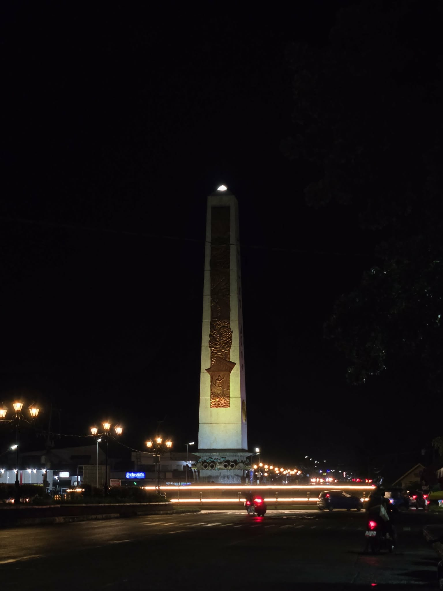
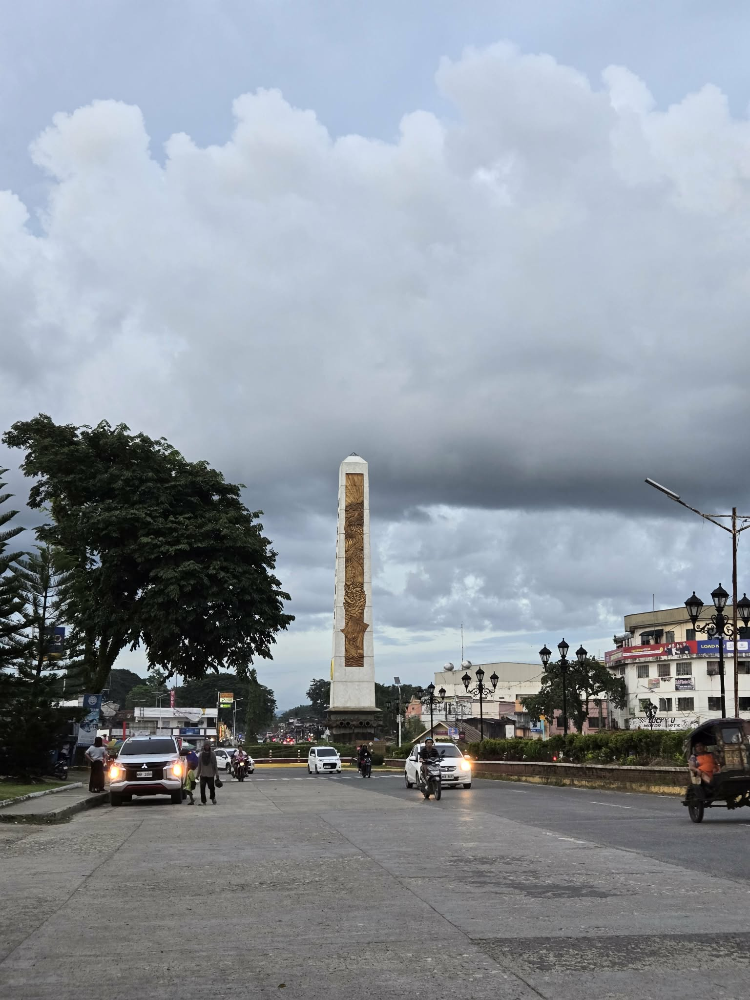
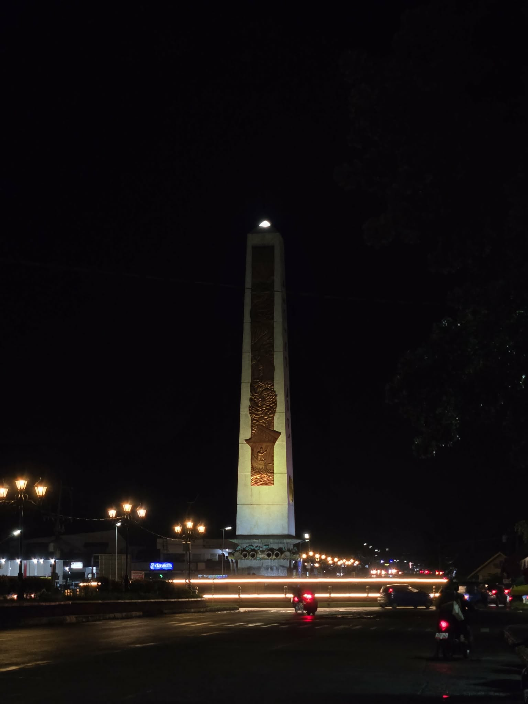
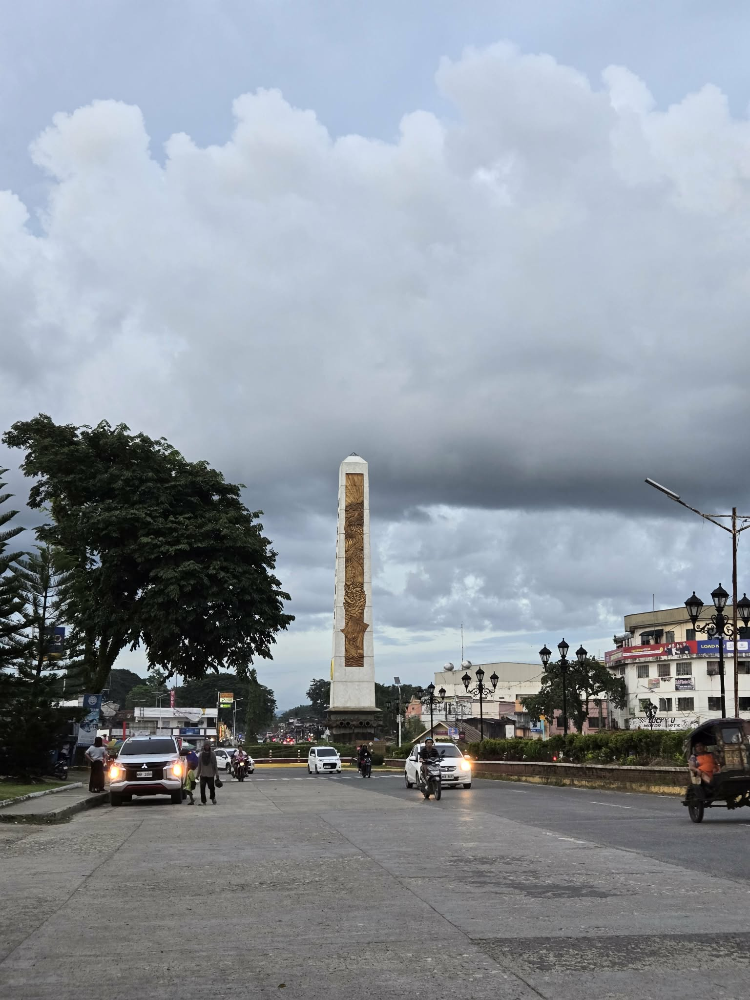

Ipil Community Hub
Ipil Community Hub
Rotunda
The Rotunda is one of Ipil’s most iconic landmarks. Serving as a central gathering space, it is known for its cultural events, community programs, and scenic surroundings.
 



History
The Rotunda was built to commemorate the town’s founding and has long been a central spot for gatherings and celebrations.
Events
From cultural shows to town meetings, the Rotunda hosts a wide variety of events that bring the community together.
Nearby Attractions
Visitors can explore local parks, cafés, and markets within walking distance of the Rotunda.